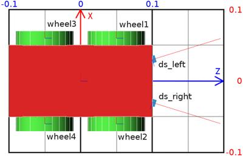
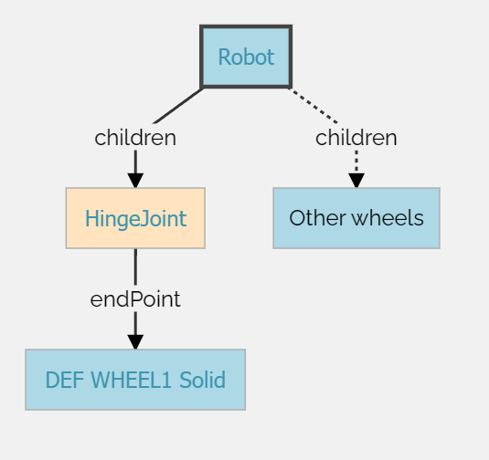
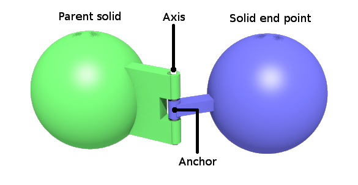
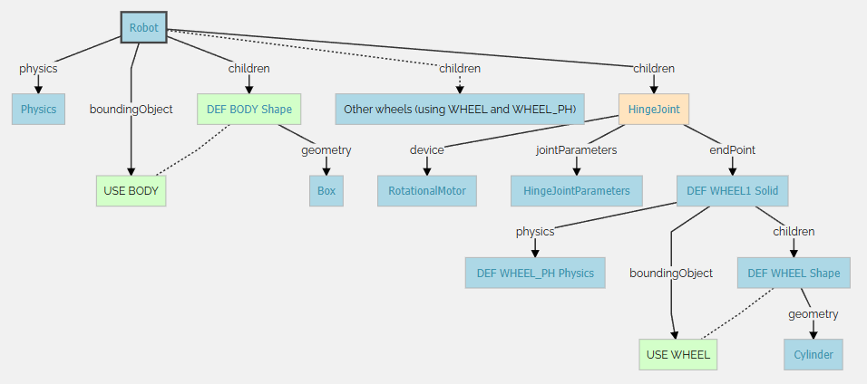

Stage3 <<
Previous Next >> Tutorial7
Tutorial6
This tutorial aims at creating your first robot from scratch. The robot will consist of a body, four wheels, and two distance sensors. The result is depicted on this figure. The next figure shows the robot from a top view.

3D view of the 4 wheels robot. Note that the coordinate system representations of the robot body and of its wheels are oriented the same way. Their +x-vector (in red) defines the left of the robot, their +y-vector (in green) defines the top of the robot, and their +z-vector (in blue) defines the front of the robot. The distance sensors are oriented in a different way, their +x-vector indicates the direction of the sensor.

Top view of the 4 wheeled robot. The grid behind the robot has a dimension of 0.2 x 0.3 meters. The text labels correspond to the name of the device.
Hands on #1: Save the world of the previous tutorial as 4_wheeled_robot.wbt. Remove the nodes defining the e-puck, the ball, the dumbbell and the contact properties. The ground, the walls and the lighting are kept.
Some definitions and rules to create the robot model:
-
The set containing the Solid node and all its derived nodes are called the solid nodes.
-
A similar definition is applied for the Device, Robot, Joint and Motor nodes. You can get more information about the node hierarchy in the nodes chart diagram.
-
Most sensors and actuators are both Solid and Device nodes at the same time.
-
The main structure of a Robot model is a tree of Solid nodes linked together. The root node of this tree should be a Robot node.
-
The solids are linked together by Joint nodes. A Device node should be the direct child of either a Robot node, a Solid node or a Joint node.
-
A Joint node is used to add one (or two) degree(s) of freedom (DOF), between its parent and its child. The direct parent and child of a Joint node are both Solid nodes.
-
The nodes derived from Joint allow creating different kinds of constraints between the linked Solid nodes. The most used one in robotics, is the HingeJoint allowing to model amongst others rotational motors including wheels.
-
A Joint node can be monitored or actuated by adding a PositionSensor node, or a motor node to its device field respectively.
Having these rules in mind, we can start designing the node hierarchy used to model the robot. The first step is to determine which part of the robot should be modeled as a Solid node.
In our example, this operation is quite obvious. The robot has 4 DOF corresponding to the wheel motors. It can be divided in five solid nodes: the body and the four wheels.
Depending on the expected application of the robot model, reducing the DOF while modelling might be necessary to get an efficient simulation. For example, when modeling a caster wheel, a realistic approach implies to model 2 DOF. But if this degree of precision is useless for the simulation, a more efficient approach can be found. For example, to model the caster wheel as a Sphere having a null friction coefficient with the ground.
The second step is to determine which Solid node is the Robot node (the root node). This choice is arbitrary, but a solution is often much easier to implement. For example, in the case of a humanoid robot, the robot node would be typically the robot chest, because the robot symmetry facilitates the computation of the joint parameters.
In our case, the body box is obviously the better choice. The figure depicts the solid nodes hierarchy of the robot.
Hands on #2: At the end of the scene tree, add a Robot node having four HingeJoint nodes having a Solid node as endPoint. Please refer to this figure. Add a Shape node containing a Box geometry to the Robot node. Set the color of the Shape to red. Use the Shape to define the boundingObject field of the Robot node. The dimension of the box is (0.2, 0.1, 0.05). Add a Physics node to the Robot. The figure represents all the nodes defining the robot. So far, only the direct children nodes of the root Robot node has been implemented.

High level representation of the 4 wheeled robot
The initial position of the wheel is defined by the translation and the rotation fields of the Solid node.
The rotation origin (anchor) and the rotation axis (axis) are defined by the optional HingeJointParameters child of the HingeJoint node.

Representation of a hinge joint
The radius of the wheel is 0.04 and its thickness (height of the cylinder) is 0.02. For the first wheel, the Solid translation should be defined to (0.05, 0.06, 0) in order to define the relative gap between the body and the wheel, and the rotation to (1 0 0 1.5708) for the wheel cylinder to be correctly oriented. The HingeJointParameters anchor should also be defined to (0.05, 0.06, 0) to define the rotation origin (relatively to the body). Finally, the HingeJointParameters axis should define the rotation axis. In our case it's along the y-axis (so (0, 1, 0)).
Hands on #3: Add a HingeJointParameters node, and enter the field values as described above. Some signs obviously have to be updated for other wheels.
Now, let's implement the cylinder shape of the wheels.
For each HingeJoint, there are three fields in which nodes need to be added.
- jointParameters: Add a HingeJointParameters and configure the anchor (0.05 -0.06 0) and axis (0 1 0) fields. These values have to be modified according to the location of the wheel.
- device: Add a RotationalMotor in order to be able to actuate the wheels. Change their
name fields from wheel1 to wheel4 according to this figure. These labels will be used to reference the wheels from the controller.
- endPoint: Add a Solid node, then a Shape node in the
children field of the Solid, and finally, add a Cylinder in the geometry field of the Shape node. The Cylinder should have a radius of 0.04 and a height of 0.02. Set the color of the wheels to green.
Hands on #4: Complete the missing nodes to get the same structure as the
one depicted in this figure. Don't forget the Physics nodes.

Low level representation of the 4 wheeled robot
The sensors used on the e-puck of Tutorial 4 are not the same as the ones used in this section. Pay attention to their measuring interval which is between 0 cm = 0 and 10 cm = 1000. Find more information about the lookupTable field here.
The last part of the robot modeling is to add the two distance sensors to the robot. This can be done by adding two DistanceSensor nodes as direct children of the Robot node. Note that the distance sensor acquires its data along the positive x-axis. So, it is necessary to rotate the distance sensor to point their x-axis outside the robot (see the figure).
Reminder: How to know the orientation of the distance sensor?
As already says in Tutorial 3, the distance sensor rays can be viewed using the shortcut ctrl-F10 or View / Optional Rendering / Show DistanceSensor Rays.
Hands on #5: Add the two distance sensors as explained above. The distance sensors are at an angle to 0.3 [rad] with the front vector of the robot. Set the graphical and physical shape to a cube (not transformed) having a edge of 0.01 [m]. Set the color to blue. Set the name field according to the labels of this figure.
Tips: How to precisely orient distance sensors?
In the DistanceSensor node, the rotation field has 4 parameters. If you set the angle parameter to 0, then you can use the mouse wheel to increment/decrement by steps of 0.1309 rad (= 7.5 degree).
In the previous tutorials, you have learnt how to setup a feedback loop and how to read the distance sensor values. However, actuating a RotationalMotor node is something new. To program the rotational motors, the first step is to include the API module corresponding to the RotationalMotor node:
from controller import Motor
Then to get the references of the RotationalMotor nodes:
wheels = []
wheelsNames = ['wheel1', 'wheel2', 'wheel3', 'wheel4']
for name in wheelsNames:
wheels.append(robot.getDevice(name))
A Motor can be actuated by setting its position, its velocity, its acceleration or its force. Here we are interested in setting its velocity. This can be achieved by setting its position to infinity, and by bounding its velocity:
speed = -1.5
wheels[0].setPosition(float('inf'))
wheels[0].setVelocity(speed)
Hands on #6: Implement a controller called four_wheeled_collision_avoidance moving the robot and avoiding obstacles by detecting them by the distance sensors.
Note that the lookupTable field of the DistanceSensor nodes indicates the values returned by the sensor. To help in the debugging with the sensors, it is possible to see the value of the sensors in the real-time in the robot-window. To open the robot-window, double-click on the robot body and it will bring up a menu on the left with the DistanceSensor and RotationalMotor graph. Run the simulation to see the evolution.
Don't forget to set the controller field of the Robot node to indicate your new controller.
As usual a possible solution of this exercise is located in the tutorials directory.
Here is the complete code of the controller developed in the previous subsection.
from controller import Robot
TIME_STEP = 64
robot = Robot()
ds = []
dsNames = ['ds_right', 'ds_left']
for i in range(2):
ds.append(robot.getDevice(dsNames[i]))
ds[i].enable(TIME_STEP)
wheels = []
wheelsNames = ['wheel1', 'wheel2', 'wheel3', 'wheel4']
for i in range(4):
wheels.append(robot.getDevice(wheelsNames[i]))
wheels[i].setPosition(float('inf'))
wheels[i].setVelocity(0.0)
avoidObstacleCounter = 0
while robot.step(TIME_STEP) != -1:
leftSpeed = 1.0
rightSpeed = 1.0
if avoidObstacleCounter > 0:
avoidObstacleCounter -= 1
leftSpeed = 1.0
rightSpeed = -1.0
else: # read sensors
for i in range(2):
if ds[i].getValue() < 950.0:
avoidObstacleCounter = 100
wheels[0].setVelocity(leftSpeed)
wheels[1].setVelocity(rightSpeed)
wheels[2].setVelocity(leftSpeed)
wheels[3].setVelocity(rightSpeed)
To compare your world with the solution, go to your files and find the folder named "my_first_simulation" created in Tutorial 1, then go to the "worlds" folder and open with a text editor the right world. This solution as the others is located in the solution directory.
You are now able to design simple robot models, to implement them and to create their controllers.
More specifically, you learnt all the different nodes involved in the design of a robot model, methods to translate and rotate a solid relative to another and the way that a rotational motor is actuated by the controller.
Stage3 << Previous Next >> Tutorial7